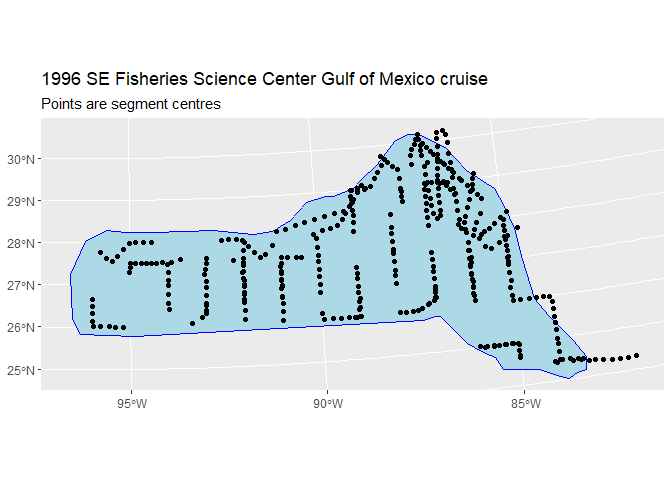

Example `dsm` analysis: pantropical dolphins in the Gulf of Mexico
David L Miller
CREEM, Univ of St AndrewsSeptember 2025
Source:vignettes/lines_gomex/mexico-analysis.Rmd
mexico-analysis.RmdIntroduction
The analysis is based on a dataset of observations of pantropical dolphins in the Gulf of Mexico (shipped with Distance 6.0 and later). For convenience the data are bundled in an R-friendly format, although all of the code necessary for creating the data from the Distance project files is available on github. The OBIS-SEAMAP page for the data may be found at the SEFSC GoMex Oceanic 1996 survey page.
The intention here is to highlight the features of the dsm package, rather than perform a full analysis of the data. For that reason, some important steps are not fully explored. Some familiarity with density surface modelling (Miller, Burt, Rexstad, & Thomas, 2013) (Hedley & Buckland, 2004) is assumed.
Preamble
Before we start, we load the dsm package (and its dependencies) and set some options:
library(dsm)
library(ggplot2)
# plotting options
gg.opts <- theme(panel.grid.major=element_blank(),
panel.grid.minor=element_blank(),
panel.background=element_blank())In order to run this vignette, you’ll need to install a few R packages. This can be done via the following call to install.packages:
install.packages(c("dsm", "Distance", "knitr", "distill", "ggplot2", "rgdal",
"maptools", "plyr", "tweedie"))The data
Most of the data we need is included in the dsm package, but two additional objects needed for plotting are required and can be downloaded here and should be put into the same directory as this file. The data can then be loaded into R using the following code:
load("mexdolphins-extra.rda")This should add the objects survey.area and pred.polys to your environment.
Observation and segment data
All of the data for this analysis has been nicely pre-formatted and is shipped with dsm. Loading that data, we can see that we have four data.frames, the first few lines of each are shown:
data(mexdolphins)segdata holds the segment data: the transects have already been “chopped” into segments.
head(segdata)## longitude latitude x y Effort Transect.Label Sample.Label depth
## 1 -86.92712 29.94378 836105.9 -1011416 13800 19960417 19960417-1 135.0
## 2 -86.83176 29.84030 846012.9 -1021407 14000 19960417 19960417-2 147.7
## 3 -86.74445 29.75279 855022.6 -1029785 14000 19960417 19960417-3 152.1
## 4 -86.65230 29.65522 864610.3 -1039168 13900 19960417 19960417-4 163.8
## 5 -86.56648 29.56088 873598.1 -1048266 13800 19960417 19960417-5 179.7
## 6 -86.49290 29.49000 881203.7 -1055004 13800 19960417 19960417-6 188.5distdata holds the distance sampling data that will be used to fit the detection function.
head(distdata)## object size distance Effort detected beaufort latitude longitude
## 45 45 21 3296.6363 36300 1 4 27.72872 -86.00159
## 61 61 150 929.1937 17800 1 4 25.99896 -87.62712
## 63 63 125 6051.0009 21000 1 2 26.00693 -87.94881
## 85 85 75 5499.6971 21800 1 1 27.50344 -90.44891
## 114 114 50 7258.9837 13400 1 3 27.40568 -94.99483
## 120 120 45 1454.7962 20900 1 5 26.01765 -95.97449
## x y
## 45 948000.065 -1236192
## 61 812161.653 -1436899
## 63 780969.520 -1438985
## 85 528656.807 -1297833
## 114 95910.149 -1324562
## 120 2477.665 -1473909obsdata links the distance data to the segments.
head(obsdata)## object Sample.Label size distance Effort
## 45 45 19960421-9 21 3296.6363 36300
## 61 61 19960423-7 150 929.1937 17800
## 63 63 19960423-9 125 6051.0009 21000
## 85 85 19960427-1 75 5499.6971 21800
## 114 114 19960430-8 50 7258.9837 13400
## 120 120 19960501-5 45 1454.7962 20900preddata holds the prediction grid (which includes all the necessary covariates).
head(preddata)## latitude longitude x y depth area
## 1 30.08333 -87.58333 774402.9 -1002759.1 35 271236913
## 2 30.08333 -87.41667 789688.6 -1001264.5 30 271236913
## 3 30.08333 -87.25000 804971.3 -999740.6 27 271236913
## 4 30.08333 -87.08333 820251.1 -998187.5 22 271236913
## 5 30.08333 -86.91667 835528.0 -996605.2 46 271236913
## 6 29.91667 -87.75000 760783.1 -1021810.3 14 271236913Typically (i.e. for other datasets) it will be necessary divide the transects into segments, and allocate observations to the correct segments using a GIS or other similar package1, before starting an analysis using dsm.
Shapefiles and converting units
Often data in a spatial analysis comes from many different sources. It is important to ensure that the measurements to be used in the analysis are in compatible units, otherwise the resulting estimates will be incorrect or hard to interpret. Having all of our measurements in SI units from the outset removes the need for conversion later, making life much easier.
The data are already in the appropriate units (Northings and Eastings: kilometres from a centroid, projected using the North American Lambert Conformal Conic projection).
There is extensive literature about when particular projections of latitude and longitude are appropriate and we highly recommend the reader review this for their particular study area; (Bivand, Pebesma, & Gómez-Rubio, 2008) is a good starting point. The other data frames have already had their measurements appropriately converted. By convention the directions are named x and y.
Using latitude and longitude when performing spatial smoothing can be problematic when certain smoother bases are used. In particular when bivariate isotropic bases are used the non-isotropic nature of latitude and longitude is inconsistent (moving one degree in one direction is not the same as moving one degree in the other).
We give an example of projecting the polygon that defines the survey area (which as simply been read into R using readShapeSpatial from a shapefile produced by GIS).
library(sf)
library(plyr)
# tell R that the survey.area object is currently in lat/long
sp::proj4string(survey.area) <- sp::CRS("+proj=longlat +datum=WGS84")
predsf <- st_as_sf(pred.polys)
area.sf <- st_as_sf(survey.area)
st_crs(area.sf) <- "WGS84"
area.sf.proj <- st_transform(area.sf, crs = st_crs(predsf))
# Convert preddata to a spatial object
preddata_sf <- st_as_sf(preddata, coords=c("x", "y"))
st_crs(preddata_sf) <- st_crs(area.sf.proj)
# Perform the intersection
preddata_sf <- st_intersection(preddata_sf, area.sf.proj)## Warning: attribute variables are assumed to be spatially constant throughout
## all geometries
coords_preddata <- data.frame(st_coordinates(preddata_sf))
preddata_sf$x <- coords_preddata$X
preddata_sf$y <- coords_preddata$Y Next bit of code works with the study.area outline, massaging it for use with soap film smoother. If you will not be using soap film smoothers, the code is extraneous.
# proj 4 string
# using http://spatialreference.org/ref/esri/north-america-lambert-conformal-conic/
lcc_proj4 <- sp::CRS("+proj=lcc +lat_1=20 +lat_2=60 +lat_0=40 +lon_0=-96 +x_0=0 +y_0=0 +ellps=GRS80 +datum=NAD83 +units=m +no_defs ")
# project using LCC
survey.area <- sp::spTransform(survey.area, CRSobj=lcc_proj4)
# simplify the object
survey.area <- data.frame(survey.area@polygons[[1]]@Polygons[[1]]@coords)
names(survey.area) <- c("x", "y")The below code generates this plot, which shows the survey area with the transect lines overlaid (using data from segdata).
segdata_sf <- st_as_sf(segdata, coords = c("x","y"))
st_crs(segdata_sf) <- st_crs(area.sf.proj)
# study area outline and segment centres
plot_segments <- ggplot() +
geom_sf(data = area.sf.proj, fill="lightblue", color = "blue", linewidth=.1) +
geom_sf(data=segdata_sf, fill=NA, color="black", linewidth=.3) +
labs(title="1996 SE Fisheries Science Center Gulf of Mexico cruise",
subtitle = "Points are segment centres") +
scale_fill_viridis_c(option = "magma", guide = "none")
plot_segments
Also note that since we have projected our prediction grid, the “squares” do not look quite like squares. So for plotting we will use the polygons that we have saved, these polygons (stored in pred.polys) are read from a shapefile created in GIS, the object itself is of class SpatialPolygons from the sp package. It needs project for proper plotting using functions in the sf package. predsf <- st_as_sf(pred.polys)
predsf <- st_as_sf(pred.polys)
# plot as projected
plot(st_geometry(predsf), axes=TRUE)Tips on plotting polygons are available from the ggplot2 pkg_down.
Exploratory data analysis
Distance data
The top panels of the EDA plots below show histograms of observed distances and cluster size, while the bottom panels show the relationship between observed distance and observed cluster size, and the relationship between observed distance and Beaufort sea state. The plots show that there is some relationship between cluster size and observed distance (fewer smaller clusters seem to be seen at larger distances).
The following code generates the EDA plots:
par(mfrow=c(2,2))
# histograms
hist(distdata$distance,main="",xlab="Distance (m)")
hist(distdata$size,main="",xlab="Cluster size")
# plots of distance vs. cluster size
plot(distdata$distance, distdata$size, main="", xlab="Distance (m)",
ylab="Group size", pch=19, cex=0.5, col=gray(0.7))
# lm fit
l.dat <- data.frame(distance=seq(0,8000,len=1000))
lo <- lm(size~distance, data=distdata)
lines(l.dat$distance, as.vector(predict(lo,l.dat)))
plot(distdata$distance,distdata$beaufort, main="", xlab="Distance (m)",
ylab="Beaufort sea state", pch=19, cex=0.5, col=gray(0.7))Top row, left to right: histograms of distance and cluster size; bottom row: plot of distance against cluster size and plot of distances against Beaufort sea state.
Spatial data
Looking separately at the spatial data without thinking about the distances, we can plot the observed group sizes in space (point size is proportional to the group size for each observation). Circle size indicates the size of the group in the observation. There are rather large areas with no observations, which might cause our variance estimates for abundance to be rather large. We also see the depth data which we will use depth later as an explanatory covariate in our spatial model.
prediction_grid <- st_make_grid(area.sf.proj, cellsize = c(9000,9000))
prediction_grid_sf <- st_sf(geometry = prediction_grid)
cropped_grid <- st_join(prediction_grid_sf, preddata_sf, join = st_nearest_feature)
cropped_grid <- st_intersection(cropped_grid, area.sf.proj)## Warning: attribute variables are assumed to be spatially constant throughout
## all geometries
depth <- ggplot() +
geom_sf(data=cropped_grid, aes(fill=depth), color=NA) +
labs(title = "Spotted dolphins, Gulf of Mexico",
subtitle = "Depth in meters, size of detected dolphin groups") +
xlab("Longitude") + ylab("Latitude") +
geom_point(aes(x, y, size=size), data=distdata, colour="red",alpha=I(0.5)) +
scale_fill_viridis_c(option = "viridis", direction = 1)
depthEstimating the detection function
We use the ds function in the package Distance to fit the detection function. (The Distance package is intended to make standard distance sampling in R relatively straightforward. For a more flexible but more complex alternative, see the function ddf in the mrds library.)
First, loading the Distance library:
We can then fit a detection function with hazard-rate key with no adjustment terms:
## Warning in ddf.ds(dsmodel = dsmodel, data = data, meta.data = meta.data, :
## Estimated hazard-rate scale parameter close to 0 (on log scale). Possible
## problem in data (e.g., spike near zero distance).## Warning in ds(distdata, max(distdata$distance), key = "hr", adjustment = NULL):
## Estimated hazard-rate scale parameter close to 0 (on log scale). Possible
## problem in data (e.g., spike near zero distance).Calling summary gives us information about parameter estimates, probability of detection, AIC, etc:
summary(detfc.hr.null)##
## Summary for distance analysis
## Number of observations : 47
## Distance range : 0 - 7847.467
##
## Model : Hazard-rate key function
## AIC : 841.2528
## Optimisation: mrds (nlminb)
##
## Detection function parameters
## Scale coefficient(s):
## estimate se
## (Intercept) 7.98244 0.9533779
##
## Shape coefficient(s):
## estimate se
## (Intercept) 0 0.7833406
##
## Estimate SE CV
## Average p 0.5912252 0.2224714 0.3762887
## N in covered region 79.4959326 30.8184416 0.3876732The following code generates a plot of the fitted detection function (left) and quantile-quantile plot (right):
##
## Goodness of fit results for ddf object
##
## Distance sampling Cramer-von Mises test (unweighted)
## Test statistic = 0.0972004 p-value = 0.598774The quantile-quantile plot show relatively good goodness of fit for the hazard-rate detection function.
Adding covariates to the detection function
It is common to include covariates in the detection function (so-called Multiple Covariate Distance Sampling or MCDS). In this dataset there are two covariates that were collected on each individual: Beaufort sea state and size. For brevity we fit only a hazard-rate detection functions with the sea state included as a factor covariate as follows:
detfc.hr.beau<-ds(distdata, max(distdata$distance), formula=~as.factor(beaufort),
key="hr", adjustment=NULL)Again looking at the summary,
summary(detfc.hr.beau)##
## Summary for distance analysis
## Number of observations : 47
## Distance range : 0 - 7847.467
##
## Model : Hazard-rate key function
## AIC : 843.7117
## Optimisation: mrds (nlminb)
##
## Detection function parameters
## Scale coefficient(s):
## estimate se
## (Intercept) 7.6631807 1.077115
## as.factor(beaufort)2 2.2796347 17.294287
## as.factor(beaufort)3 0.2860623 1.019185
## as.factor(beaufort)4 0.0717478 1.223465
## as.factor(beaufort)5 -0.3639848 1.537672
##
## Shape coefficient(s):
## estimate se
## (Intercept) 0.3004326 0.5179983
##
## Estimate SE CV
## Average p 0.5421265 0.1750696 0.3229313
## N in covered region 86.6956354 29.4151901 0.3392926Here the detection function with covariates does not give a lower AIC than the model without covariates (843.71 vs. 841.25 for the hazard-rate model without covariates). Looking back to the bottom-right panel of the EDA plots, we can see there is not a discernible pattern in the plot of Beaufort vs distance.
For brevity, detection function model selection has been omitted here. In practise we would fit many different forms for the detection function (and select a model based on goodness of fit testing and AIC).
Fitting a DSM
Before fitting a dsm model, the data must be segmented; this consists of chopping up the transects and attributing counts to each of the segments. As mentioned above, these data have already been segmented.
A simple model
We begin with a very simple model. We assume that the number of individuals in each segment are quasi-Poisson distributed and that they are a smooth function of their spatial coordinates (note that the formula is exactly as one would specify to gam in mgcv). By setting group=TRUE, the abundance of clusters/groups rather than individuals can be estimated (though we ignore this here). Note we set method="REML" to ensure that smooth terms are estimated reliably.
Running the model:
We can then obtain a summary of the fitted model:
summary(dsm.xy)##
## Family: quasipoisson
## Link function: log
##
## Formula:
## count ~ s(x, y) + offset(off.set)
##
## Parametric coefficients:
## Estimate Std. Error t value Pr(>|t|)
## (Intercept) -18.20 0.53 -34.34 <2e-16 ***
## ---
## Signif. codes: 0 '***' 0.001 '**' 0.01 '*' 0.05 '.' 0.1 ' ' 1
##
## Approximate significance of smooth terms:
## edf Ref.df F p-value
## s(x,y) 24.8 27.49 2.354 0.000733 ***
## ---
## Signif. codes: 0 '***' 0.001 '**' 0.01 '*' 0.05 '.' 0.1 ' ' 1
##
## R-sq.(adj) = 0.121 Deviance explained = 43.4%
## -REML = 936.04 Scale est. = 94.367 n = 387The exact interpretation of the model summary results can be found in (S. N. Wood, 2017); here we can see various information about the smooth components fitted and general model statistics.
We can use the deviance explained to compare between models2.
We can also get a rough idea of what the smooth of space looks like using vis.gam (white/yellow indicates high values, red low indicates low values):
vis.gam(dsm.xy, plot.type="contour", view=c("x","y"), asp=1, type="response", contour.col="black", n.grid=100)
The type="response" argument ensures that the plot is on the scale of abundance but the values are relative (as the offsets are set to be their median values). This means that the plot is useful to get an idea of the general shape of the smooth but cannot be interpreted directly.
Adding another environmental covariate to the spatial model
The data set also contains a depth covariate (which we plotted above). We can include in the model very simply:
dsm.xy.depth <- dsm(count~s(x,y,k=10) + s(depth,k=20), detfc.hr.null, segdata, obsdata, method="REML")
summary(dsm.xy.depth)##
## Family: quasipoisson
## Link function: log
##
## Formula:
## count ~ s(x, y, k = 10) + s(depth, k = 20) + offset(off.set)
##
## Parametric coefficients:
## Estimate Std. Error t value Pr(>|t|)
## (Intercept) -18.740 1.236 -15.16 <2e-16 ***
## ---
## Signif. codes: 0 '***' 0.001 '**' 0.01 '*' 0.05 '.' 0.1 ' ' 1
##
## Approximate significance of smooth terms:
## edf Ref.df F p-value
## s(x,y) 6.062 7.371 0.923 0.5038
## s(depth) 9.443 11.466 1.585 0.0824 .
## ---
## Signif. codes: 0 '***' 0.001 '**' 0.01 '*' 0.05 '.' 0.1 ' ' 1
##
## R-sq.(adj) = 0.0909 Deviance explained = 34.3%
## -REML = 939.52 Scale est. = 124.9 n = 387Here we see a drop in deviance explained, so perhaps this model is not as useful as the first. We discuss setting the k parameter in Model checking, below.
Setting select=TRUE here (as an argument to gam) would impose extra shrinkage terms on each smooth in the model (allowing smooth terms to be removed from the model during fitting; see ?gam for more information). This is not particularly useful here, so we do not include it. However when there are many environmental predictors is in the model this can be a good way (along with looking at \(p\)-values) to perform term selection.
Simply calling plot on the model object allows us to look at the relationship between depth and the linear predictor:
plot(dsm.xy.depth, select=2)Omitting the argument select in the call to plot will plot each of the smooth terms, one at a time.
Spatial models when there are covariates in the detection function
The code to fit the DSM when there are covariates in the detection function is similar to the other models, above. However since the detection function has observation-level covariates, we must estimate the abundance per segment using a Horvitz-Thompson-like estimator before modelling, so we change the response to be abundance.est:
As we can see, the summary results are rather similar:
summary(dsm.est.xy)##
## Family: quasipoisson
## Link function: log
##
## Formula:
## abundance.est ~ s(x, y) + offset(off.set)
##
## Parametric coefficients:
## Estimate Std. Error t value Pr(>|t|)
## (Intercept) -18.0234 0.4738 -38.04 <2e-16 ***
## ---
## Signif. codes: 0 '***' 0.001 '**' 0.01 '*' 0.05 '.' 0.1 ' ' 1
##
## Approximate significance of smooth terms:
## edf Ref.df F p-value
## s(x,y) 24.64 27.43 2.35 0.000289 ***
## ---
## Signif. codes: 0 '***' 0.001 '**' 0.01 '*' 0.05 '.' 0.1 ' ' 1
##
## R-sq.(adj) = 0.129 Deviance explained = 42.2%
## -REML = 1043.6 Scale est. = 174.08 n = 387As is the resulting spatial smooth (though the resulting surface is somewhat “amplified”):
Other response distributions
Often the quasi-Poisson distribution doesn’t give adequate flexibility and does not capture the overdispersion in the response data (see Model checking and Model selection below), so below we illustrate two additional distributions that can be used with count data.
For the models in this section, we’ll move back to the count response, though the estimated abundance would also work.
Tweedie
Response distributions other than the quasi-Poisson can be used, for example the Tweedie distribution. The Tweedie distribution is available in dsm by setting family=tw().
dsm.xy.tweedie <- dsm(count~s(x,y), detfc.hr.null, segdata, obsdata, family=tw(), method="REML")
summary(dsm.xy.tweedie)##
## Family: Tweedie(p=1.347)
## Link function: log
##
## Formula:
## count ~ s(x, y) + offset(off.set)
##
## Parametric coefficients:
## Estimate Std. Error t value Pr(>|t|)
## (Intercept) -17.2640 0.2363 -73.07 <2e-16 ***
## ---
## Signif. codes: 0 '***' 0.001 '**' 0.01 '*' 0.05 '.' 0.1 ' ' 1
##
## Approximate significance of smooth terms:
## edf Ref.df F p-value
## s(x,y) 12.82 17.13 1.628 0.0562 .
## ---
## Signif. codes: 0 '***' 0.001 '**' 0.01 '*' 0.05 '.' 0.1 ' ' 1
##
## R-sq.(adj) = 0.0684 Deviance explained = 26.8%
## -REML = 351.49 Scale est. = 60.26 n = 387Negative binomial
Though not used here there are, similarly, two options for the negative binomial distribution: negbin and nb. The former requires the user specification single parameter theta or a range of values for the parameter (specified as a vector), the latter estimates the value of theta during the model fitting process (and is generally faster). The latter is recommended for most users.
Other spatial modelling options
There is a large literature on spatial modelling using GAMs, much of which can be harnessed in a DSM context. Here are a few highlights.
Soap film smoothing
To account for a complex region (e.g., a region that includes peninsulae) we can use the soap film smoother (Simon N. Wood, Bravington, & Hedley, 2008).
To use a soap film smoother for the spatial part of the model we must create a set of knots for the smoother to use. This is easily done using the make.soapgrid() function in dsm:
soap.knots <- make.soapgrid(survey.area,c(15,10))where the second argument specifies the number of points (in each direction) in the grid that will be used to create the knots (knots in the grid outside of survey.area are removed).
As we saw in the exploratory analysis, some of the transect lines are outside of the survey area. These will cause the soap film smoother to fail, so we remove them:
x <- segdata$x; y<-segdata$y
onoff <- inSide(x=x,y=y, bnd=as.list(survey.area))
rm(x,y)
segdata.soap <- segdata[onoff,]Note that the soap_checker script available here can be useful in ensuring that the boundary, data and knots are in the correct format to use with the soap film smoother.
We can run a model with both the depth covariate along with a spatial (soap film) smooth. Note that the k argument now refers to the complexity of the boundary smooth in the soap film, and the complexity of the film is controlled by the knots given in the xt argument.
dsm.xy.tweedie.soap<-dsm(count~s(x, y, bs="so", k=15, xt=list(bnd=list(survey.area))) +
s(depth),
family=tw(), method="REML",
detfc.hr.null, segdata.soap, obsdata, knots=soap.knots)
summary(dsm.xy.tweedie.soap)##
## Family: Tweedie(p=1.356)
## Link function: log
##
## Formula:
## count ~ s(x, y, bs = "so", k = 15, xt = list(bnd = list(survey.area))) +
## s(depth) + offset(off.set)
##
## Parametric coefficients:
## Estimate Std. Error t value Pr(>|t|)
## (Intercept) -18.017 0.405 -44.49 <2e-16 ***
## ---
## Signif. codes: 0 '***' 0.001 '**' 0.01 '*' 0.05 '.' 0.1 ' ' 1
##
## Approximate significance of smooth terms:
## edf Ref.df F p-value
## s(x,y) 3.050 72.000 0.064 0.114944
## s(depth) 5.135 6.196 3.895 0.000793 ***
## ---
## Signif. codes: 0 '***' 0.001 '**' 0.01 '*' 0.05 '.' 0.1 ' ' 1
##
## R-sq.(adj) = 0.0653 Deviance explained = 33.1%
## -REML = 339.26 Scale est. = 54.022 n = 365Model checking
Fitting models is all well and good, but we’d like to confirm that the models we have are reasonable; dsm provides some functions for model checking.
We can use gam.check to generate diagnostic plots:
gam.check(dsm.xy)##
## Method: REML Optimizer: outer newton
## full convergence after 6 iterations.
## Gradient range [-7.105973e-08,-9.826122e-09]
## (score 936.0363 & scale 94.3674).
## Hessian positive definite, eigenvalue range [5.800328,192.5304].
## Model rank = 30 / 30
##
## Basis dimension (k) checking results. Low p-value (k-index<1) may
## indicate that k is too low, especially if edf is close to k'.
##
## k' edf k-index p-value
## s(x,y) 29.0 24.8 1.01 0.99These show that there is some deviation in the Q-Q plot. The “line” of points in the plot of the residuals vs. linear predictor plot corresponds to the zeros in the data.
Note that as well as the plots, gam.check also produces information about the model fitting. Of particular interest to us is the last few lines that tell us about the basis size.
The k parameter provided to s (and te) terms in dsm controls the complexity of the smooths in the model.
By setting the k parameter we specify the largest complexity for that smooth term in the model; as long as this is high enough, we can be sure that there is enough flexibility. In the output from gam.check above, we can see that there is a “p-value” calculated for the size of the basis, this can be a good guide as to whether the basis size needs to be increased.
The ?choose.k manual page from mgcv gives further guidance and technical details on this matter.
We can look at the same model form but with a Tweedie distribution specified as the response:
gam.check(dsm.xy.tweedie)##
## Method: REML Optimizer: outer newton
## full convergence after 8 iterations.
## Gradient range [-1.513175e-06,3.981813e-06]
## (score 351.486 & scale 60.26034).
## Hessian positive definite, eigenvalue range [0.6230615,103.5094].
## Model rank = 30 / 30
##
## Basis dimension (k) checking results. Low p-value (k-index<1) may
## indicate that k is too low, especially if edf is close to k'.
##
## k' edf k-index p-value
## s(x,y) 29.0 12.8 0.73 0.34The Q-Q plot now seems much better (closer to the \(y=x\) line). In both plots the histogram of residuals is rather hard to interpret due to the large number of zeros in the data.
Further guidance on interpreting gam.check output can be found in (S. N. Wood, 2017).
Randomised quantile residuals
In the top right panel of the above gam.check plots the residuals vs. linear predictor plot includes a odd line of predictions. These are an artifact of the link function, showing the exact zeros in the data. These can be misleading and distracting, making it difficult to see whether residuals show heteroskedasticity.
Randomised quantile residuals (Dunn & Smyth, 1996) avoid this issue by transforming the residuals to be exactly normally distributed. This makes the residuals vs. linear predictor plot much easier to interpret as it therefore doesn’t include the artifacts generated by the link function. These plots can be produced using rqgam.check in dsm:
rqgam_check(dsm.xy.tweedie)Here we can see that there is no issue with heteroskedasticity (no increase in spread in the residuals vs. linear predictor plot with increasing values of the linear predictor). One can also plot these residuals against covariate values to check for pattern in the residuals.
Note that in general, plots other than “Resids vs. linear pred.” should be interpreted with caution in the output of rqgam.check as the residuals generated are normal by construction (so for example the Q-Q plot and histogram of residuals will always look fine).
Model selection
Assuming that models have “passed” the checks in gam.check, rqgam.check and are sufficiently flexible, we may be left with a choice of which model is “best”. There are several methods for choosing the best model – AIC, REML/GCV scores, deviance explained, full cross-validation with test data and so on.
Though this document does not intend to be a full analysis of the pantropical dolphin data, we can create a results table to compare the various models that have been fitted so far in terms of their abundance estimates and associated uncertainties.
# make a data.frame to print out
mod_results <- data.frame("Model name" = c("`dsm.xy`", "`dsm.xy.depth`", "`dsm.xy.tweedie`", "`dsm.xy.tweedie.soap`",
"`dsm.est.xy`"),
"Description" = c("Bivariate smooth of location, quasipoisson",
"Bivariate smooth of location, smooth of depth, quasipoisson",
"Bivariate smooth of location, smooth of depth, Tweedie",
"Soap film smooth of location, smooth of depth, Tweedie",
"Bivariate smooth of location, smooth of depth, Tweedie, Beaufort covariate in detection function"),
"Deviance explained" = c(unlist(lapply(list(dsm.xy,
dsm.xy.depth,
dsm.xy.tweedie,
dsm.xy.tweedie.soap),
function(x){paste0(round(summary(x)$dev.expl*100,2),"%")})),NA))We can then use the resulting data.frame to build a table of results using the kable function:
kable(mod_results, col.names=c("Model name", "Description", "Deviance explained"))| Model name | Description | Deviance explained |
|---|---|---|
dsm.xy |
Bivariate smooth of location, quasipoisson | 43.38% |
dsm.xy.depth |
Bivariate smooth of location, smooth of depth, quasipoisson | 34.32% |
dsm.xy.tweedie |
Bivariate smooth of location, smooth of depth, Tweedie | 26.78% |
dsm.xy.tweedie.soap |
Soap film smooth of location, smooth of depth, Tweedie | 33.05% |
dsm.est.xy |
Bivariate smooth of location, smooth of depth, Tweedie, Beaufort covariate in detection function | NA |
Abundance estimation
Once a model has been checked and selected, we can make predictions over the grid and calculate abundance. The offset is stored in the area column3.
dsm.xy.pred <- predict(dsm.xy, preddata, preddata$area)Given predicted abundance estimates for each cell in the prediction grid, these are connected to the prediction grid object for mapping:
prediction_grid <- st_make_grid(area.sf.proj, cellsize = c(9000,9000))
prediction_grid_sf <- st_sf(geometry = prediction_grid)
preddata_sf$Prediction_xy <- dsm.xy.pred
cropped_grid <- st_join(prediction_grid_sf, preddata_sf, join = st_nearest_feature)
cropped_grid <- st_intersection(cropped_grid, area.sf.proj)## Warning: attribute variables are assumed to be spatially constant throughout
## all geometries
pred <- ggplot() +
geom_sf(data = cropped_grid, aes(fill = Prediction_xy), color = NA) +
geom_sf(data=segdata_sf, fill=NA, color="white", linewidth=.001) +
labs(title="Spotted dolphins, Gulf of Mexico, abundance estimates",
subtitle = "Bivariate smooth of location, quasipoisson") +
scale_fill_viridis_c(option = "viridis", direction = 1)
predWe can calculate abundance over the survey area by simply summing these predictions:
sum(dsm.xy.pred)## [1] 28462.22We can compare this with a plot of the predictions from this dsm.xy.depth:
dsm.xy.depth.pred <- predict(dsm.xy.depth, preddata, preddata$area)
preddata_sf$Prediction_xy_depth <- dsm.xy.depth.pred
cropped_grid <- st_join(prediction_grid_sf, preddata_sf, join = st_nearest_feature)
cropped_grid <- st_intersection(cropped_grid, area.sf.proj)## Warning: attribute variables are assumed to be spatially constant throughout
## all geometries
pred <- ggplot() +
geom_sf(data = cropped_grid, aes(fill = Prediction_xy_depth), color = NA) +
geom_sf(data=segdata_sf, fill=NA, color="white", linewidth=.001) +
labs(title="Spotted dolphins, Gulf of Mexico, abundance estimates",
subtitle = "Bivariate smooth of location, smooth of depth, quasipoisson") +
scale_fill_viridis_c(option = "viridis", direction = 1)
pred
We can see the inclusion of depth into the model has had a noticeable effect on the distribution (note the difference in legend scale between the two plots). We can again also look at the total abundance:
sum(dsm.xy.depth.pred)## [1] 27084.54Here we see that there is not much of a change in the abundance, so in terms of abundance alone there isn’t much between the two models. Next we’ll go on to look at variance next where we can see bigger differences between the models.
Variance estimation
Obviously point estimates of abundance are important, but we should also calculate uncertainty around these abundance estimates. Fortunately dsm provides functions to perform these calculations and display the resulting uncertainty estimates.
There are two approaches to estimating the uncertainty of an abundance estimate in dsm.
-
dsm_var_gamwhich assumes that the spatial model and detection function parts of the model are independent of each other. In this case the squared coefficients of variation for each model component are added. -
dsm_var_propwhich takes into account the fact that detection probability may be correlated with the spatial part of the model. It uses methods described in (Bravington, Miller, & Hedley, 2021).
dsm_var_prop can only be applied when there is a covariate in the detection function that varies at the level of the segments, and is recorded at each segment (for example Beaufort). We don’t have that situation here, so we opt for dsm_var_gam.
Both methods estimate the variance of the abundance for each element in the list provided in pred.data. In our case we wish to obtain an abundance for each of the prediction cells, so we use split to chop our data set into list elements to give to dsm_var_gam (or dsm_var_prop).
preddata.var <- split(preddata, 1:nrow(preddata))
dsm.xy.var <- dsm_var_gam(dsm.xy, pred.data=preddata.var,
off.set=preddata$area)Calling summary will give some information about uncertainty estimation:
summary(dsm.xy.var)## Summary of uncertainty in a density surface model calculated
## analytically for GAM, with delta method
##
## Approximate asymptotic confidence interval:
## 2.5% Mean 97.5%
## 13133.77 28462.22 61680.55
## (Using log-Normal approximation)
##
## Point estimate : 28462.22
## CV of detection function : 0.3762887
## CV from GAM : 0.164
## Total standard error : 11682.74
## Total coefficient of variation : 0.4105We can also make a plot of the CVs (with transect lines and observations overlaid) using the following code.
preddata_sf$CV <- sqrt(dsm.xy.var$pred.var)/preddata_sf$Prediction_xy
cropped_grid <- st_join(prediction_grid_sf, preddata_sf, join = st_nearest_feature)
cropped_grid <- st_intersection(cropped_grid, area.sf.proj)## Warning: attribute variables are assumed to be spatially constant throughout
## all geometries
CV <- ggplot() +
geom_sf(data = cropped_grid, aes(fill = CV), color = NA) +
geom_sf(data=segdata_sf, fill=NA, color="white", linewidth=.001) +
labs(title="Spotted dolphins, Gulf of Mexico, uncertainty (CV)",
subtitle = "Bivariate smooth of location, quasipoisson") +
scale_fill_viridis_c(option = "viridis", direction = 1)
CVNote the increase in CV away from the transect lines.
We can revisit the model that included both depth and location smooths and observe that the coefficient of variation for that model is larger than that of the model with only the location smooth.
dsm.xy.depth.var <- dsm_var_gam(dsm.xy.depth, pred.data=preddata.var,
off.set=preddata$area)
summary(dsm.xy.depth.var)## Summary of uncertainty in a density surface model calculated
## analytically for GAM, with delta method
##
## Approximate asymptotic confidence interval:
## 2.5% Mean 97.5%
## 12407.79 27084.54 59121.90
## (Using log-Normal approximation)
##
## Point estimate : 27084.54
## CV of detection function : 0.3762887
## CV from GAM : 0.1741
## Total standard error : 11229.87
## Total coefficient of variation : 0.4146Conclusions
This document has outlined an analysis of spatially-explicit distance sampling data using the dsm package. Note that there are many possible models that can be fitted using dsm and that the aim here was to show just a few of the options. Results from the models can be rather different, so care must be taken in performing model selection, discrimination and criticism.
Software
-
Distanceis available at http://github.com/DistanceDevelopment/Distance as well as on CRAN. -
dsmis available at http://github.com/DistanceDevelopment/dsm, as well as on CRAN.